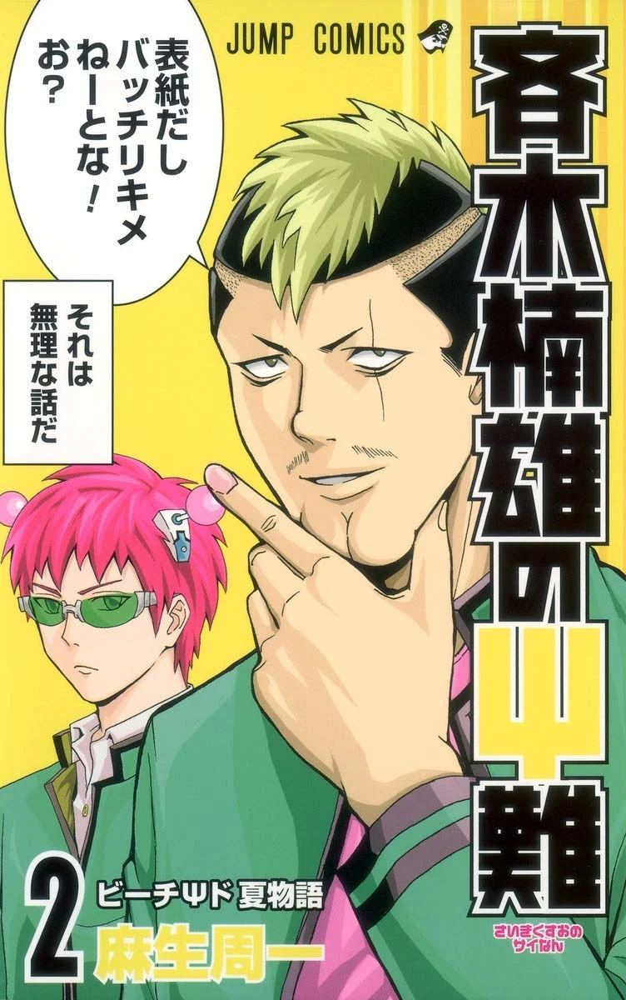
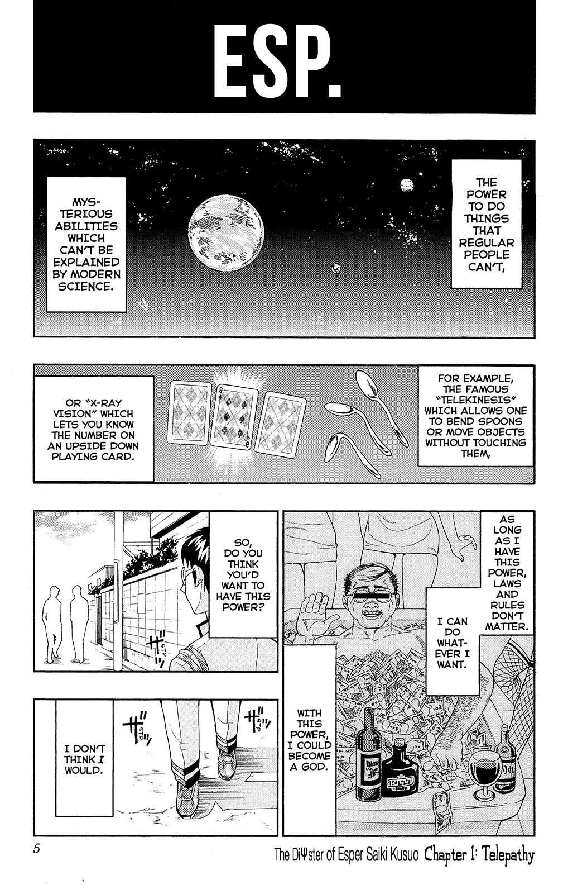

Saiki Kusuo no Ψ-nan
by Shūichi Asō
Synopsis
Kusuo Saiki is a high school student born with an extraordinary range of psychic powers, including telepathy, teleportation, and clairvoyance. Despite his incredible abilities, Saiki wants nothing more than to live a quiet, ordinary life. Unfortunately, his eccentric classmates, strange friends, and unpredictable everyday situations constantly disrupt his plans, leading to hilarious supernatural misadventures.
Chapter 1

Kusuo Saiki possesses powerful psychic abilities that allow him to read minds, teleport, and manipulate his surroundings. However, instead of enjoying his extraordinary gifts, he considers them a burden and desperately wants to avoid attention.
Saiki attempts to keep his powers hidden and maintain a peaceful school life, but his eccentric classmates and their endless problems repeatedly drag him into ridiculous situations. No matter how carefully he plans, his dream of an ordinary life always seems just out of reach.
— End of chapter —